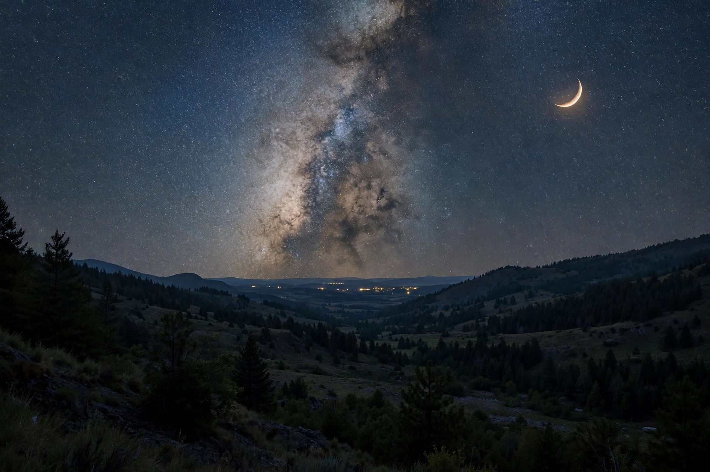

Cassie 的小角落
月亮从海里升起来，整条路都是银的。
The moon rose out of the sea, and the whole road turned silver.
雪山顶上挂着一个月亮，冷冷的，亮亮的。
A moon hangs over the snow peak, cold and bright.

月牙很瘦，银河很胖，夜里什么都不用急。
A thin crescent, a fat Milky Way — nothing in the night is in a hurry.